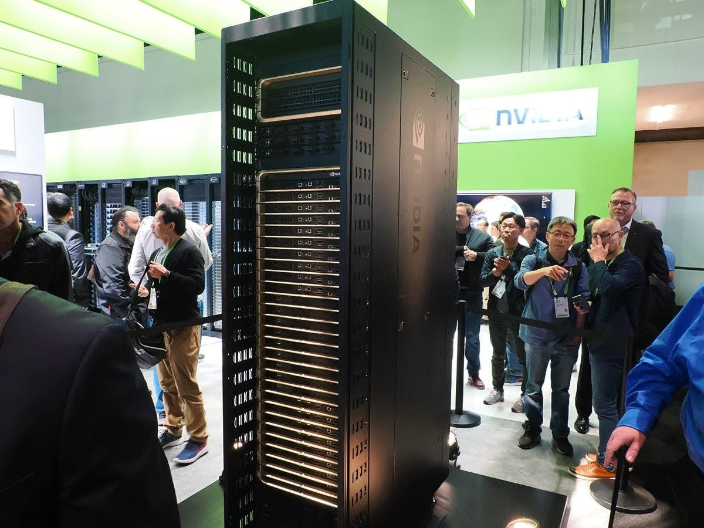
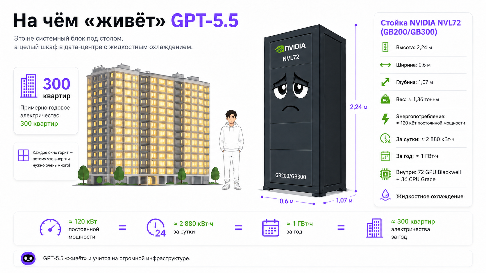
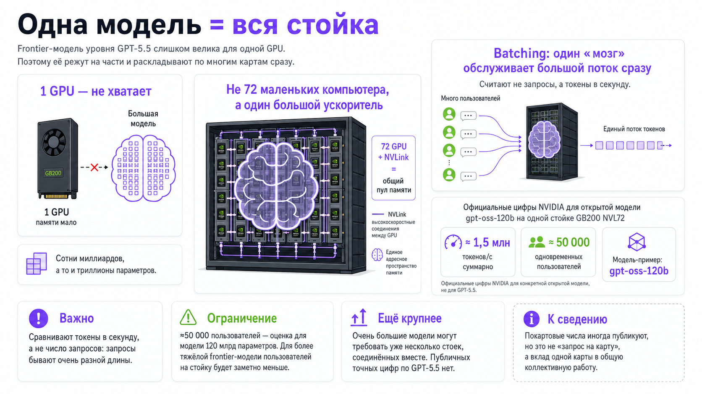
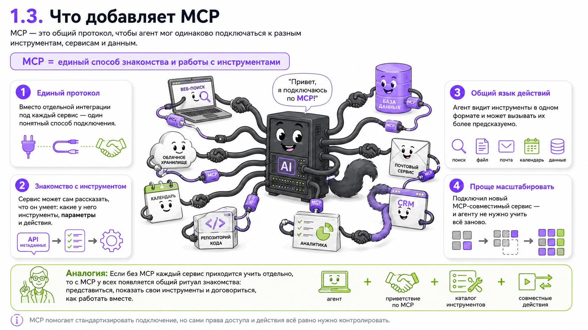

Блок 1. Что такое агент и при чём тут LLM (30 мин)
1.1. Что такое LLM
Большая языковая модель (LLM, Large Language Model) — это очень мощный предсказатель следующего слова, обученный на огромном объёме текста. Её суперспособность одна: получив текст на входе, выдать правдоподобное продолжение.
Модели, с которыми мы работаем на этом курсе — ChatGPT, Claude, Gemini — настолько большие, что их нельзя запустить на собственном компьютере. Им нужен GPU (Graphic Processor Unit) — специализированное «железо» для тяжёлых вычислений. Обученная модель запускается вот на такой штуке (см. фото). В ней — практически все знания, которые произвела письменная культура человечества.


1.2. Что добавляет «агентность»
Агент — это та же LLM, но которой дали три вещи:
- Руки (инструменты, tools) — возможность не только говорить, но и действовать: открыть файл, отправить письмо, выполнить поиск, запустить код.
- Доступы (коннекторы, разрешения) — ключи к вашим приложениям и данным: почта, диск, календарь, базы.
- Право на цикл (автономию) — разрешение действовать в несколько шагов самому: попробовать → посмотреть результат → исправить → продолжить, пока задача не решена.
Аналогия: если LLM сама по себе — это очень начитанный консультант, который умеет только говорить, то агент — это тот же консультант, которому выдали ноутбук, ключи от офиса, доступ к корпоративной почте и сказали: "вот задача, действуй, отчитайся, когда сделаешь".
1.3. Ключевое отличие в одной картинке (нарисовать на доске)
Агентный цикл (agent loop) — сердце агентности. Модель не выдаёт ответ за один проход, а крутится в петле «подумал → сделал шаг → посмотрел, что получилось → решил, что дальше». Именно это превращает «советчика» в «исполнителя».
Блок 2. Инфраструктура: из чего собран агент
Словарь
- 1. LLM — речь. Способность к любым языкам — и к нашим, человеческим, и к Питону.
- 2. GPU — нейроны. GPU (графический процессор) — это железо, на котором LLM «живёт». Изначально GPU делали для игр (рендеринг графики), но оказалось, что та же математика идеально подходит для нейросетей.
- 3. MCP — «универсальная розетка» для инструментов. MCP (Model Context Protocol) — открытый стандарт, придуманный Anthropic в конце 2024 года и быстро ставший индустриальным. Это единый способ подключать к агенту внешние «цифровые» инструменты и источники данных.
- 4. Tool use / function calling — «механизм рук». Сама способность модели вызвать инструмент, а не только описать его. MCP — это розетка-стандарт, tool use — само «нажатие кнопки».
- 5. Веб, зрение, управление компьютером — «другие руки». И это НЕ всё MCP. Важное уточнение: не каждый инструмент идёт через MCP.
- Веб-доступ — поиск и чтение страниц; часто встроенный инструмент.
- Computer use — модель видит экран (компьютерное зрение) и сама водит мышью/клавиатурой по реальному рабочему столу.
- Не MCP: MCP соединяет с сервисами «по проводам», а computer use — прямое управление вашим экраном, поэтому всегда под разрешениями.
- 6. .md (Markdown) — «язык инструкций и памяти». Простой текст с лёгкой разметкой, читаемый и человеком, и машиной. На нём пишут и инструкции для агента, и его записи. Записка и блокнот одновременно.
- 7. Скилл ≠ память. Хотя оба часто живут в .md — отсюда путаница.
- Скилл — инструкция КАК делать задачу: рецепт, статичный, переиспользуемый. (Поваренная книга.)
- Память — запись ЧТО было / что узнал / что вы предпочитаете: копится, динамична. (Блокнот повара: «этот клиент не ест кинзу».)
- Разделяем: скилл = процедура, память = состояние и факты.
- 8. Контекстное окно и токены — «рабочая память». Токен ≈ слово или его часть; окно — сколько модель удерживает за раз. Объясняет, почему агент «забывает» начало длинного разговора; память в .md это обходит.
- 9. Терминал ≠ ВМ ≠ песочница. Три разные вещи.
- Терминал — текстовое окно для команд. Это «дверь», а не «комната».
- Виртуальная машина (ВМ) — отдельный компьютер, симулированный внутри вашего.
- Песочница — огороженная среда, где программа действует, не задевая остальную систему.
- Важно: терминал сам по себе песочницей не является; изоляцию определяет то, где исполняется команда, а не то, через что её отдали.
- 10. Где «сидит» Cowork — гибрид. Вычисления (код, shell) идут в изолированной Linux-ВМ — это песочница. Но доступ к файлам и приложениям реальный: агент видит и пишет только в выданные папки, управляет только разрешёнными приложениями. Граница не «внутри/снаружи», а «что вы пустили через границу». Управление рабочим столом действует на реальную машину — поэтому отдельно обставлено разрешениями.
- 11. Разрешения / OAuth — «ключи и красные линии». Тренд не «спрашивать на каждый чих», а настраиваемая автономия: крупные доступы (папки, коннекторы) выдаёте один раз заранее, а подтверждение агент просит лишь перед необратимым — отправить, опубликовать, удалить, потратить деньги. «Свободно внутри периметра, стоп на красных линиях».
- 12. Извлечение из своих данных: от RAG к большому контексту + агентному поиску. Раньше: заранее сложить архив в векторную базу (эмбеддинги) и искать по смыслу. Сейчас акцент сместился — окна выросли до миллионов токенов (часто проще «закинуть всё в контекст»), а агенты сами ищут по файлам (поиск, чтение) = «агентный поиск». Но для огромных корпусов (весь архив редакции) ретрив выгоднее по цене/скорости. Точнее не «RAG умер», а «сместился акцент».
- 13. Системный промпт — «должностная инструкция». Скрытый текст с ролью, правилами и границами агента — ещё до вашего первого сообщения.
Сводка одной фразой: LLM — речь, GPU — нейроны, MCP и tool use — руки и розетка, веб/computer use — ещё руки (не через MCP), .md — язык инструкций и памяти, SKILL — инструкция (рецепт), контекстное окно — рабочая память, терминал — дверь / VM-песочница — где и насколько изолированно исполняется код, разрешения — ключи, пропуски и границы дозволенного.
